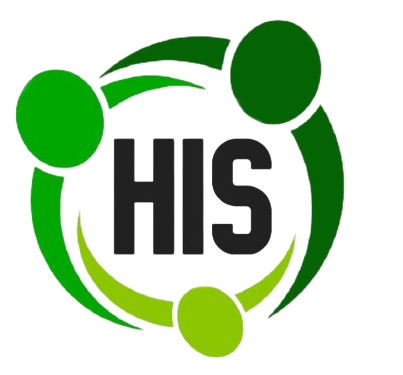
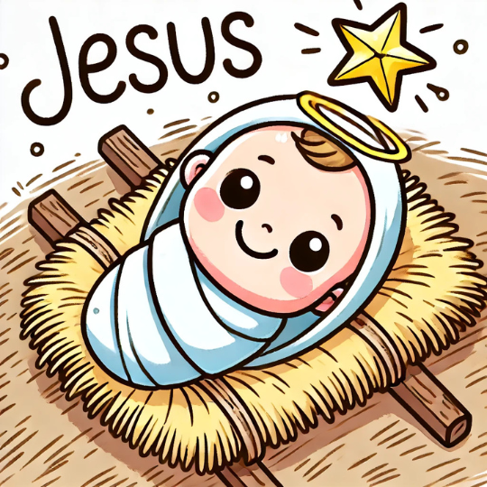
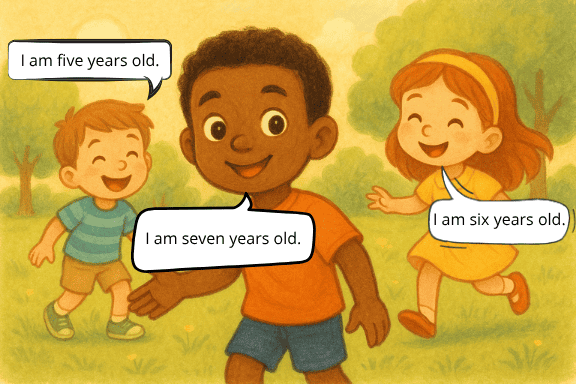
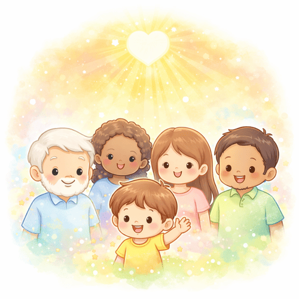
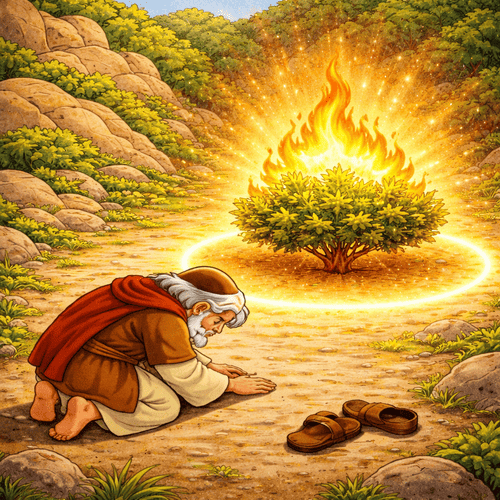
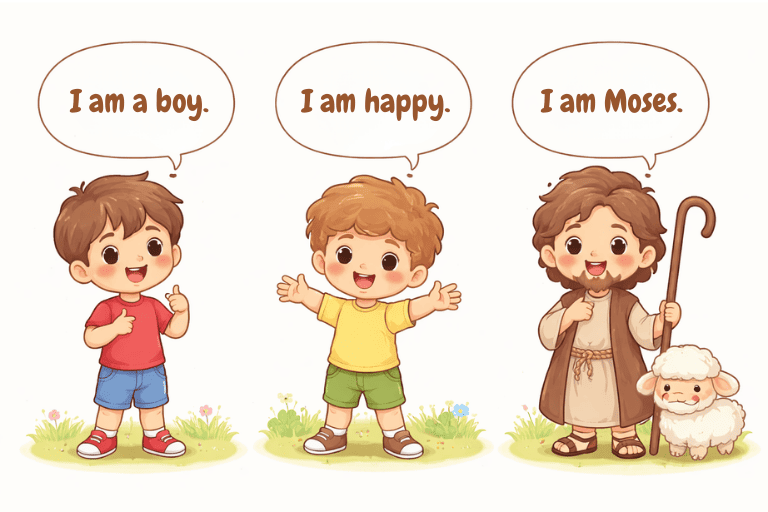
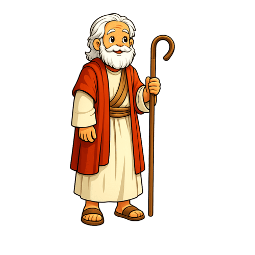
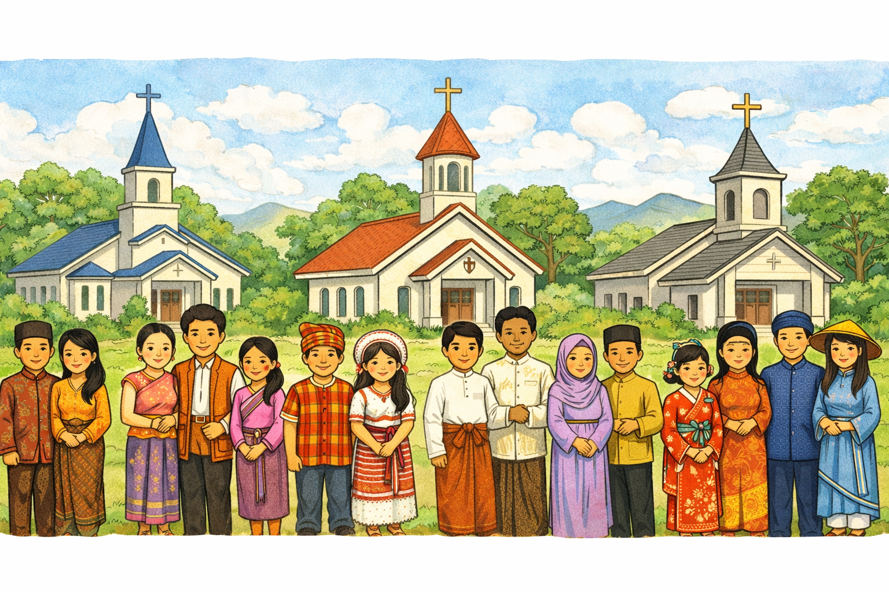
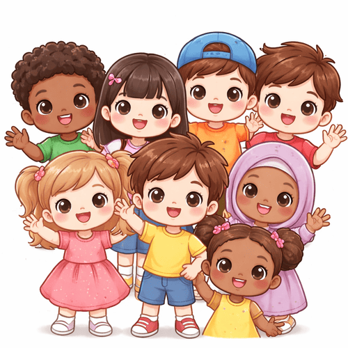

O HIS — HIS English Course é um projeto missionário que utiliza o ensino de inglês com conteúdo bíblico, metodologia interativa e tecnologia educacional para ajudar igrejas a servirem sua comunidade com excelência, propósito e visão missionária.

O HIS nasce da convicção de que a igreja pode usar a educação como instrumento de serviço, aproximação e evangelismo. O inglês se torna uma ponte relevante para as famílias, enquanto o evangelho permanece no centro.
Alcança crianças e famílias por meio de um serviço útil e constante.
A criança aprende o idioma por meio de histórias, canções e Escrituras.
Igreja local + participação na missão transcultural.
Equipar a igreja local para servir sua própria comunidade com apoio, direção e estrutura.
Se torna parceira e decide abrir turmas.
Treinamento, metodologia e acesso ao app.
Sala, tutor, divulgação e matrícula.
Comunidade alcançada + missão fortalecida.

Apresentação do app: atividades interativas, jogos, vídeos e prática de conversação com IA.
Crianças alfabetizadas até 10 anos
2h semanais, presencial + app
Starter com 20 unidades
Membros e/ou comunidade

A criança se torna uma ponte natural entre a igreja e sua casa.
Vocabulário, escuta, fala e histórias bíblicas integrados.
A igreja conhece realidades, oferece bolsas e serve com amor.

Toda contribuição é destinada à missão transcultural. Sua igreja participa do sustento da obra missionária.
Ela coopera com um projeto missionário maior, fortalecendo o testemunho cristão em outras nações.
100% dos recursos vão para esta missão
Representa a adesão a um projeto missionário educacional, com liberdade para a igreja decidir sua política local de cobrança, bolsas e alcance comunitário.

| Turmas | Capacidade | Contribuição mensal | Custo/aluno (cheia) |
|---|---|---|---|
| 1 turma | até 20 alunos | R$ 500 | R$ 25,00 |
| 2 turmas | até 40 alunos | R$ 700 | R$ 17,50 |
| 3 turmas | até 60 alunos | R$ 900 | R$ 15,00 |
| 4+ turmas | até 80+ alunos | R$ 1.000 | R$ 12,50 |
A igreja mantém liberdade para cobrar, subsidiar ou oferecer bolsas. O objetivo é permitir acesso, comprometimento e impacto evangelístico local.
Ela está aderindo a uma proposta missionária que une evangelismo infantil, ensino bíblico, tecnologia, aproximação com famílias e fortalecimento da obra missionária transcultural.
A proposta prevê a consolidação de um polo de treinamento presencial, onde tutores e líderes de outras cidades e estados poderão receber capacitação intensiva em formato de fim de semana para implantação de novos polos.

Apresentação do projeto, definição da visão local e escolha do formato de abertura das turmas.
Escolha do responsável local, organização do ambiente e preparação básica dos recursos necessários.
Capacitação inicial do tutor e alinhamento sobre o uso do app, condução da aula e propósito evangelístico.
Abertura das vagas, comunicação com a igreja e mobilização da comunidade local.
Lançamento oficial do polo com acompanhamento inicial e avaliação dos primeiros encontros.

Uma igreja pode começar com poucos alunos e ainda assim participar da missão com significado e visão de longo prazo.
Com treinamento, acompanhamento e padronização, o modelo pode ser replicado em outras cidades e estados.
Cada nova parceria fortalece tanto o alcance local quanto a sustentabilidade do campo missionário.

Convidamos sua igreja a se tornar parceira de um projeto missionário que une evangelismo infantil, serviço à comunidade, conteúdo bíblico e tecnologia educacional. O HIS existe para equipar a igreja local a alcançar crianças e famílias com excelência, propósito e amor cristão.
